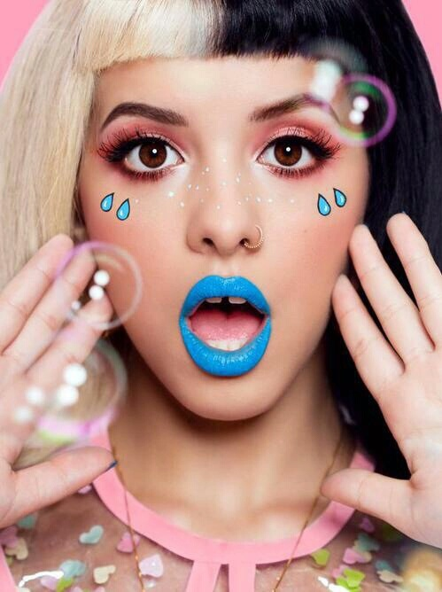

Tumbler
Tumblr-макияж предполагает использование ярких цветов, блесток и необычных деталей.
Этот стиль был особенно популярен в начале этого десятилетия. Но и сейчас девушки с удовольствием раскрашивают глаза
пастельными тенями и клеят стразы на кожу.

Этот макияж, как может показаться, имеет много общего с мэйком в стиле поп-арт.
{% endblock %}